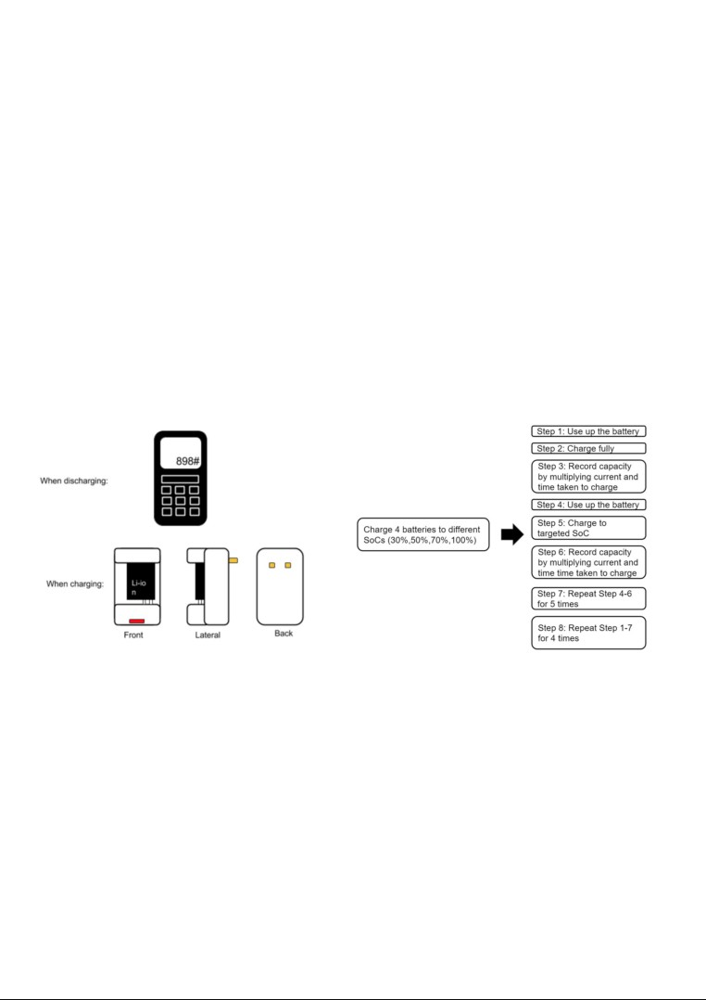
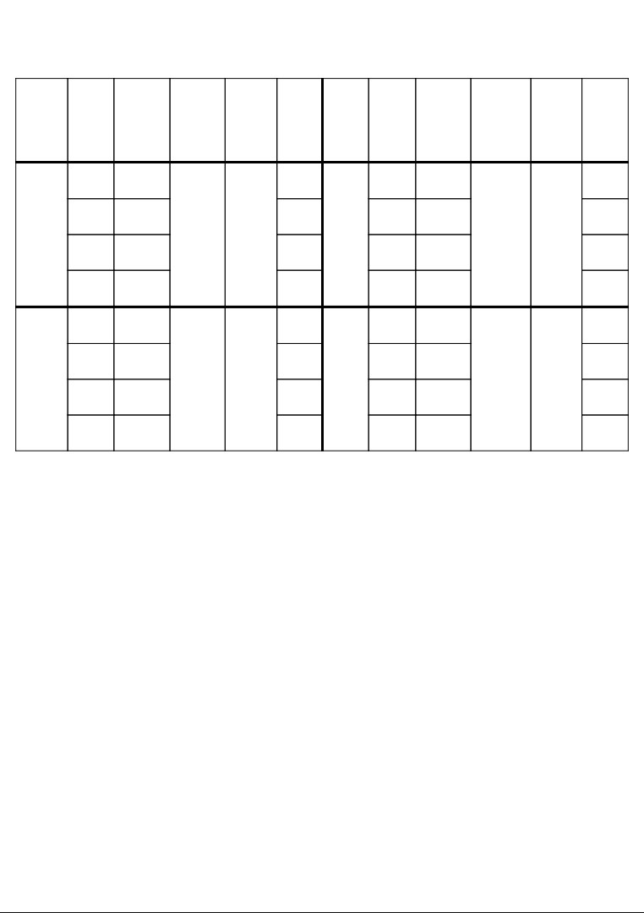
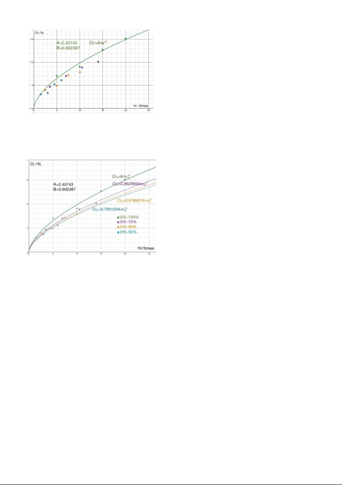
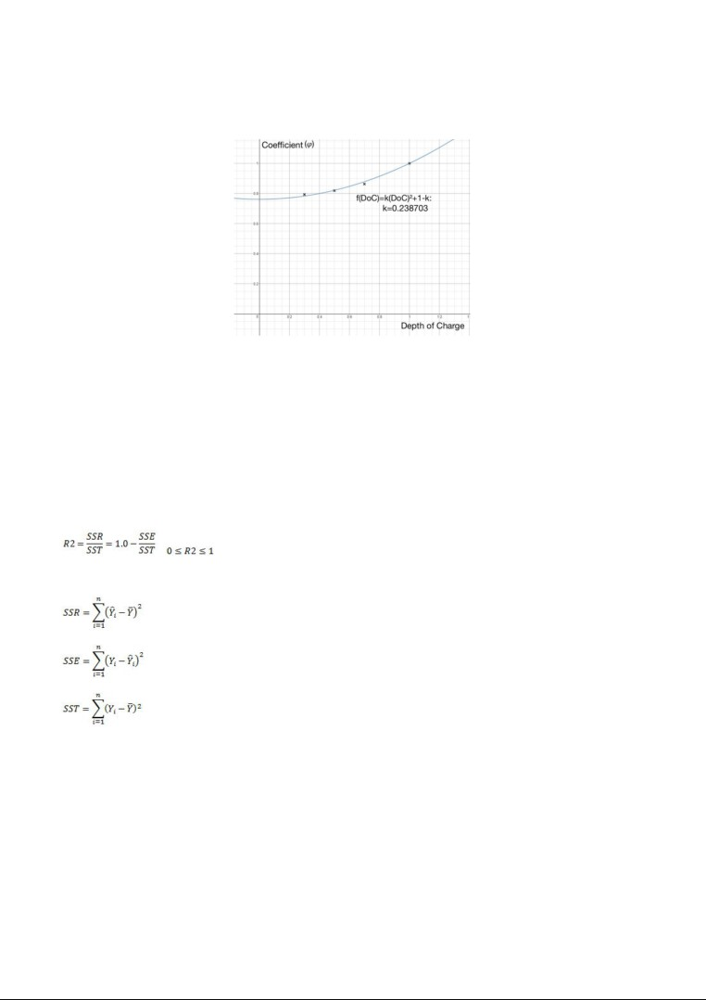

The failure rate and cycle-life prediction model of
lithium-ion batteries
Chen, Yijia & Ren, Shuzhe
National Junior College
ABSTRACT
Global wastage of rechargeable batteries is increasing rapidly. It is important to educate people to
reduce wastage and protect the environment. Early in 2008, Li et. al (Li et. al, 2008) constructed a
model, Cr = A • ncB , which indicates that the failure rate(Cr) grows exponentially with cycle life(nc).
However, the model excludes the depth of charge (DoC). Therefore, we tested Nokia BL-5C batteries
(1020mAh, 3.7~5V) to correlate DoC and failure rate. According to our records of failure rates and
times of charging, we built a model [Cr = a (kd2 + 1 - k) ncb] by using curve-fitting, regression and
analysing techniques. Considering real-life cases (2018, Antonio Villas-Boas), we conclude that 50%
DoC is the best depth of charge.
REPORT
INTRODUCTION
Background of project
Mobile phones have been becoming more popular and used by people of all ages. The total number of
mobile phones around the world is over 7 billions. (International Telecommunication Union, 2016)
Inevitably, global demand for rechargeable batteries has increased rapidly. Each year consumers
dispose billions of batteries, all of which contains toxic or corrosive materials. One example of such
toxic metals is lithium. Such waste threatens the environment if they are being improperly disposed.
(Michael Merry, 2018) Efforts have been made in various countries to recycle and reuse batteries, but
rates of lithium-ion battery recycling are disappointing. (Joey Gardiner, 2017)
Motivation and Aims
Wastage of batteries may be due to improper use of rechargeable batteries. We would like to find a
better way to charge mobile phones so that the rechargeable batteries’ cycle lives can be extended, and
hence reduces the need to dispose and purchase new batteries. Currently existing models only
correlate the influence of temperature and current with a battery’s failure rate. (Li et. al, 2008)
However, people’s habits of charging their phones vary mainly in the depth of charge (DoC). In order
to reduce battery wastage and protect the environment, it is necessary to introduce a coefficient
associated with DoC into the currently existing models so that we can conclude the best way to charge
a battery.
Hypothesis
The DoC impacts on a battery’s failure rate. The larger the DoC, the higher the failure rate. It is
because some lithium ions inside the battery become inactive in the long run. A relatively smaller DoC
uses lithium ions more effectively.
METHODOLOGY
Mathematical model
Svante August Arrhenius, who was the first Nobel-Prize winner, created the Arrhenius equation.
(George Newnes, 1961) This equation explains the relation between the reaction rate constant k and
the apparent activation energy E at temperature T in a reaction:
kr = A • e-E/kT
kr is the reaction rate constant, T is the absolute temperature (in kelvin), E is the activation energy, A is
a constant for each chemical reaction, k is the Boltzmann constant, e is the natural constant.
Using Arrhenius Equation, Li et. al (Li et. al, 2008) constructed a model on the prediction of
lithium-ion batteries’ cycle lives. They added another variable, electrical current, into the equation.
Firstly they assumed:
B(T,I)
Cr = A(T,I) • nc
______
Equation 1
Cr: failure rate , nc: times of full charge (100% charge)
They expanded functions A(T,I) and B(T,I):
A(T,I) = a·eα/T＋b·Iβ ＋c
B(T,I) = l·eλ/T＋mIη＋f
a,b,c,l,m,f,α,β,λ,η are all constants of a specific type of batteries
The model improved by Li et. al is used by many researchers, for instance, “the Study on Cycle-Life
Prediction Model of Lithium-Ion Battery for Electric Vehicles” done by Minghui Hu et. al.
However, Li did their experiments using 100% DoC. (i.e. They charge batteries from 0% state of
charge to 100% state of charge) Our experiment can focus on different DoCs (i.e. from 0% state of
charge to X% state of charge) in order to improve Equation 1.
State of charge (SoC): the current percentage of the battery capacity available for discharge

Experimental design
The assumption we made is that batteries and charging plugs do not change their modes of operation.
Step 1: Set up all equipment (figure 1), including a Nokia handphone, a charging plug which provides
a constant electrical current of 500mA, a stopwatch, a electricity supplier (i.e. a socket) and, a battery
inside the phone.
Step 2: Use up the battery inside the phone by keeping the screen on.
Step 3: Charge the battery till 100% SoC. Record the time taken T(minutes).
Step 4: According to the full-charge time, calculate the time taken t1 = 30% * T for 30% electrical
input.
Step 5: Use up this battery again. Charge it for t1 minutes.
Step 6: Every five times we repeat Step 5, repeat Step 2 and 3 again to get an updated actual capacity
and record it in the table. Calculate new time taken t₂ (minutes) for 30% electrical input.
Step 7: Stop charging the battery after 20 times of charge.
Step 8: Repeat Step 1 to 7 using all three other batteries, each having 50%, 70% and 100% DoC.
Figure 1: Experimental set-up
Step 9: Calculate the failure rates of each battery after every five times of charge. Record in the table.
Step 10: Plot the Cr - nc (failure rate - times of charge) graph of the battery with 100% depth of charge
to get coefficient A and B in Equation 2.
Step 11: Substituting A and B, repeat curve fitting three times for points in other DoCs in the form of
Cr = φA • ncB, where φ is a constant for each DoC.
Step 12: Plot a graph on φ against DoC. Use regression to get the best-fit curve of the four points.
Step 13: Test the coefficient of determination of each graph in Steps 10 and 11.

RESULTS AND ANALYSIS
Depth
Final
Initial
failure
Depth
Final
Initial
failure
No. of
Current
No. of
Current
of
capacity
capacity
rate
of
capacity
Capacity
rate
charge
(mA)
charge
(mA)
charge
(mAh)
(mAh)
(%)
charge
(mAh)
(mAh)
(%)
5
688
7.02
5
858
4.67
10
673
9.05
10
837
7.00
100%
740
~500
70%
900
~500
15
646
12.7
15
820
8.89
20
628
15.1
20
809
10.1
5
711
3.92
5
669
3.04
10
704
4.86
10
665
3.62
50%
740
~500
30%
690
~500
15
687
7.16
15
656
4.93
20
682
7.84
20
652
5.51
Table 1: Recording of failure rate and numbers of charge
We carry on our experiments under room temperature and constant electrical current, so
Equation 1 can be simplified into:
Cr = A • ncB
______
(Equation 2)
where A and B are constants. We determine coefficients A and B using values from the battery having
100% DoC.
We plot the four points from 100% DoC in Desmos. By typing in “y~AxB ”, which is our
mathematical model for the relationship between Cr(y) and nc(x), Desmos automatically creates the
best-fit curve and gives values of A and B. Here is what the graph looks like (points of different colors
represent points from different DoC):

Figure 2: Cr - nc graph for 100% DoC（green）
Purple points are for 70% DoC
Orange points are for 50% DoC
Blue points are for 30% DoC
Clearly, we can see that the curve does not fit points from all DoCs. We get better-fit curves for
different DoCs by curve-fitting in the form of Cr = φA • ncB, where φ is a constant:
Figure 3: Cr - nc graph for 0%-100%(green),
0%-70%(purple), 0%-50%(yellow) and 0%-30%(blue)
Then we plot another graph of these coefficients φ (1, 0.862866, 0.818891 and 0.793125) against
depth of charge (DoC)/% to get f(DoC), which is a function of DoC. According to the theoretical facts
that:
1. Failure rate increases as DoC increases ⇒ graph is an increasing graph
2. The change in effect of DoC becomes smaller as DoC decreases, which has been shown in the
graph that the lower curves are closer to each other. (Cr₃ and Cr₄ compared to Cr₁ and Cr₂) ⇒
Approaching to 0% DoC, the slope of the graph will approach to 0. The gradient of the graph becomes
steeper as depth of charge increases. ⇒ This is a convex function with slope of the function at x=0 is
0.
⇒Hence we try to use a quadratic curve f(DoC)=k(DoC)²+q to fit all points since quadratic curves
have similar trends described in 1 and 2 above.
3. When DoC equals to 100%, the modified equation( Cr = f(DoC)A • ncB) should equal to Equation 2
(Cr = A • ncB), and hence f(DoC) equals to 1 when DoC is 1(i.e 100%) which also means that the graph
passes through point (1,1) ⇒ If the quadratic equation is y=px2+qx+r, then must have q+p+r=1.

⇒Hence, k+q=1 which means q=1-k. At last, we get the function f(DoC)=k(DoC)²+1-k which
satisfies all the conditions above.
We fit all points with f(DoC)=k(DoC)²+1-k:
Figure 4: Graph of four coefficients against depth of charge
Here, we use the coefficient of determination to see whether the function fits the points well.
The coefficient of determination is shown as an R2-value. A value of R2=1.0 indicates the best fit,
whereas R2=0 indicates that the regression model might be unsuitable for this set of data. The R2-value
measures how much of the variation in the data points can be explained by the selected regression
model. (Anderson et. al, 1999)
where
(the regression sum of squares)
(the residual or error sum of squares)
(the total sum of squares, SST= SSE+SSR)
The coefficient of determination R2 is about 0.9863 which means the equation f(DoC)=k(DoC)²+1-k
can explain the trend well.
Finally, we now can get a modified Cr-nc equation:
Cr =A (kd2 + 1 - k) ncB, where 0 < d ≤ 1
______
Equation 3
The new model can be also be justified by the increase in R2 (Coefficient of Determination) values.
Depth of
R2 using Equation 2
R2 using Equation 3
charge/%
30
0
0.8965
50
0.2298
0.9443
70
0.6131
0.9858
100
0.9756
0.9756
As we can see, R2 are much nearer to 1 using Equation 3 for different DoCs compared to using
Equation 2, meaning that Equation 3 gives better-fit.
DISCUSSION
Observation and explanations
We observed that the larger the depth of charge, the higher the failure rate with the equal circle life.
The impact of depth of charge on failure rate can be expressed by a quadratic curve.
Failure rate measures the rate of cells in a battery becoming inactive. Irreversible chemical or physical
changes will inevitably occur when people charge a battery. These changes lead to the loss of active
materials of which they are made (Battery and Energy Technologies, 2005).
Large depth of charge is one of the basic ageing factors inherent in the battery chemistry. The greater
the depth of charge accelerates batteries’ aging as more chemicals become inactive faster.
Limitations
The method used to detect battery capacity is inaccurate and outdated. Although the charging plug
supplies a nearly constant current of 500mA, there are still fluctuations in the electrical current supply.
This makes our recorded value have small deviations from the actual value.
Besides, the type of batteries we used is a very old version and has uneven qualities. This is why their
capacities drop rapidly. The trend we observed is limited to one type of batteries before we conduct
further experiments on other types. It may not be able to apply to other types of batteries. What is
more, the number of batteries we used is small and the charging times are not adequate for us to find
the trend for the whole battery life and draw a perfect conclusion.
CONCLUSION
We have worked out the impact of DoC and inserted a function of f(DoC) in front of an existing
model:
Cr = A (kd2 + 1 - k) ncB , where 0 < d ≤ 1
Considering real-life cases, we conclude that 50% DoC is the best depth of charge when charging a
phone because the failure rate at 50% DoC is relatively small and the DoC is reasonable when people
use their phones (2018, Antonio Villas-Boas).
In the future, we would like to experiment on other batteries in smartphones instead of Nokia
dumbphones. This improvement will give us get results closer to modern life.
BIBLIOGRAPHY
(2005). Battery Reliability and How to Improve it, Battery and Energy Technologies.
Antonio Villas-Boas. (2018) You’ve been charging your smartphone wrong, Business Insider
US.
(2016). ICT Facts & Figures: The World in 2015, International Telecommunication Union.
Anderson, E., Bai, Z., Bischof, C., Blackford, S., Demmel, J., Dongarra, J., Du Croz, J.,
Greenbaum, A., Hammarling, S., McKenney, A., Sorensen, D., (1999), LAPACK Users' Guide,
3rd ed., Society for Industrial and Applied Mathematics, Philadelphia, PA, ISBN =
0-89871-447-8
George Newnes. (1961) “Arrhenius, Svante August” in Chambers’s Encyclopedia, Vol. 1, George
Newnes, London.
Joey Gardiner. (2017). The rise of electric cars could leave us with a big battery waste problem, The
Guardian.
Li Huo Lin, Su Jin Ran. (2008). Cycle-life prediction model studies of lithium-ion batteries, Chinese
Journal of Power Sources, 32(4):242-246.
Michael Merry. (2018). Environmental Problems That Batteries Cause, SCIENCING.